问题描述
现象
纹理像素分辨率过大，比被贴图的表面更精细，也会出现问题。例如：
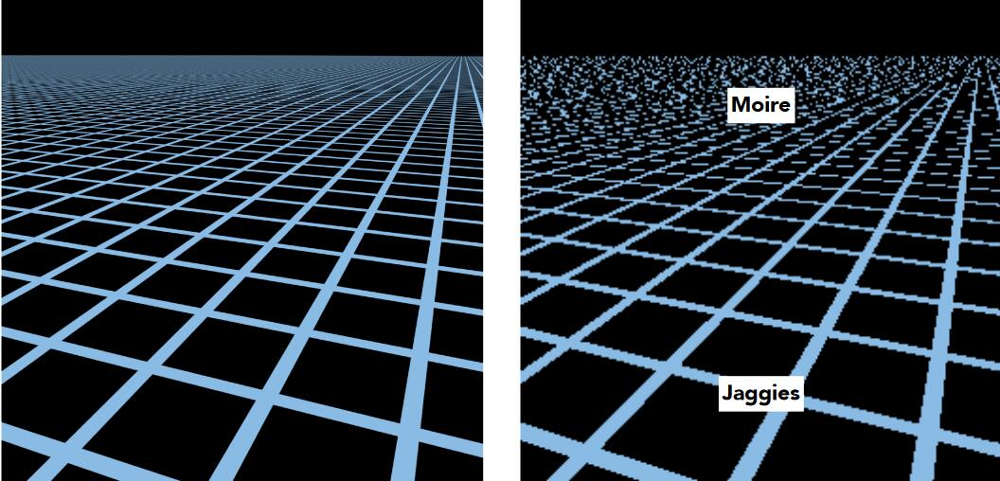👆 左：期待效果 右：实际效果
原因
由于透视的原因，不同距离的屏幕像素对应的纹理像素区域不同
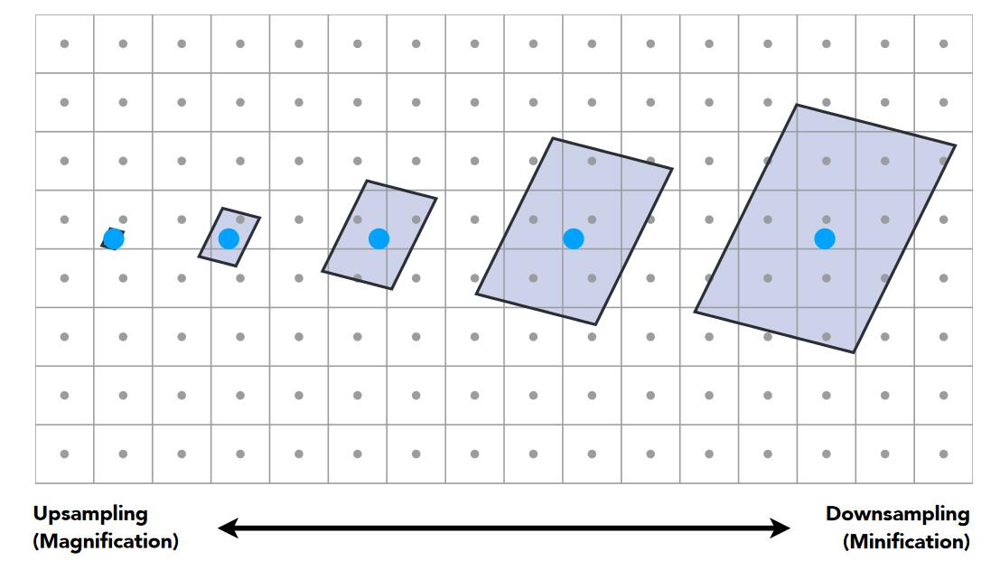
👆 有的像素对应一小部分纹理像素，有的像素对应较大区域的纹理像素
- 在近处，物体表面比纹理图更精细，即Texture Magnification问题，见上一页，表现为锯齿。
- 在远处，纹理图比物体表面精细，一个屏幕像素对应一片纹理像素，但只取一个纹理像素来代表这一片点，也会出现问题，表现为摩尔纹
进一步解释，从纹理图中取一个texel的过程可以看作是对纹理图的采样。alias的本质是信号变化过快而采样跟不上信号变化的速度。纹理的变化快而采样点稀疏就导致了这种现象。
💡 两个空间的映射，任何一方的不匹配都会现alias，那就对变化快的一块做平均，或对变化慢的一方做细分。
解决方法一：超采样 MSAA
🔎MSAA
- 原理
对于远处的一个点，取512个texel的value的平均值。
- 效果
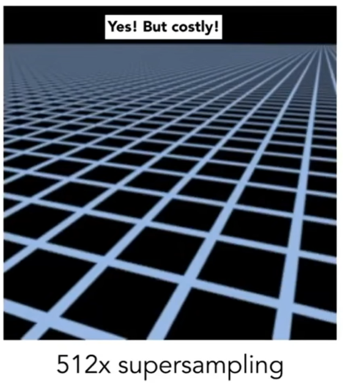
- 局限性
可解决，但costly。
解决方法二： Mip map
原理
点查询（采样）-->范围查询（取一个范围的平均）。
📌
范围查询的应用场景非常广泛，除了CG，还有其它很多领域会用到。
范围查询的目标也有多种，例如取范围内的最大值、最小值、平均值。在这里要查的是平均值。
范围查询的算法也有很多种，在当前场景下使用同MIP Map算法来做范围平均值的查询。
Mip Map算法
- 作用：用于范围内平均值的查询
- 特点：快，不精确（近似），只能查询正方形区域
-
原始纹理称为第0层纹理，根据第0层纹理预先生成出第1-7层纹理。每一层都是上一层缩小一倍。1-7层低分辨率纹理总共仅消耗额外1/3存储。
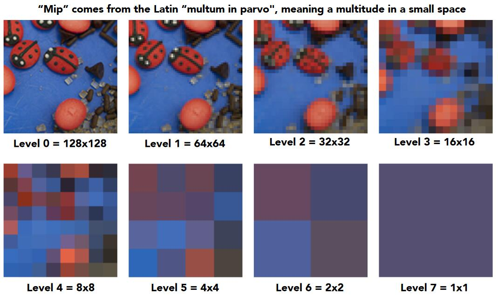
-
找出屏幕上的一个像素对应的纹理上的近似方形区域。
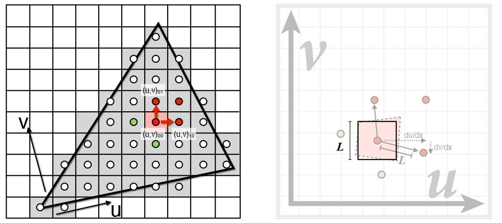
第一步：画出像素对应的四边形区域
已知某像素及其邻居像素对应的texel的位置。像素与上面邻居像素对应的texel位置的中线，认为是像素对应的texel的上边界。
以这种方法，可以在纹理上画出一个不规则四边形区域。
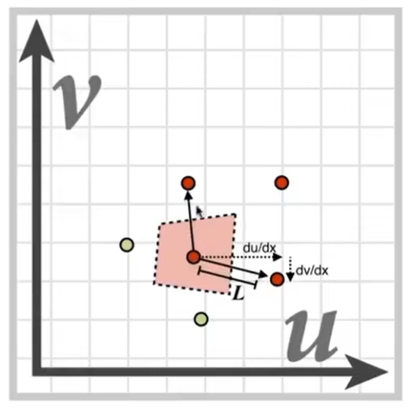
第二步：用一个正方形来近似这个不规则四边形区域。
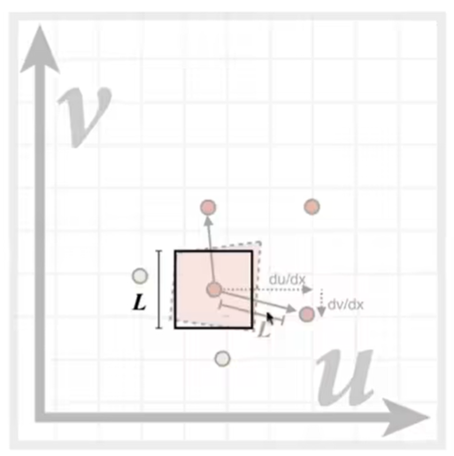
边长L为：
$$ L = \max(\sqrt{(\frac{du}{dx})^2+(\frac{dv}{dx})^2}, \sqrt{(\frac{du}{dy})^2+(\frac{dv}{dy})^2}) $$
❓ 问：这个公式没有看懂。x和y分别是指什么呢？公式里的变化量是什么呢？是什么和什么之间取最大值？
✅ 答：x和y分别是两个邻居。L是当前texel与两个邻居之间的距离的最大值。（为什么是两个？为什么是这两个邻居？）公式中的两项，分别代表当前texel和x、y的距离。距离是用勾股定理算出来的。里面的微分量是当前texel到邻居的位置变化，分别对应横轴的变化和纵轴的变化。
这只是一种近似方法。可以用其它达到近似目的的方法。
- 根据mipmap计算边长为L的纹理方形区域的均值。边长为L的方形区域，会在第\(\log_2L\)层变成一个像素。直接查在\(\log_2L\)层纹理上查(u,v)的值即可。
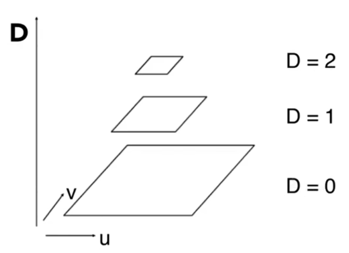
效果
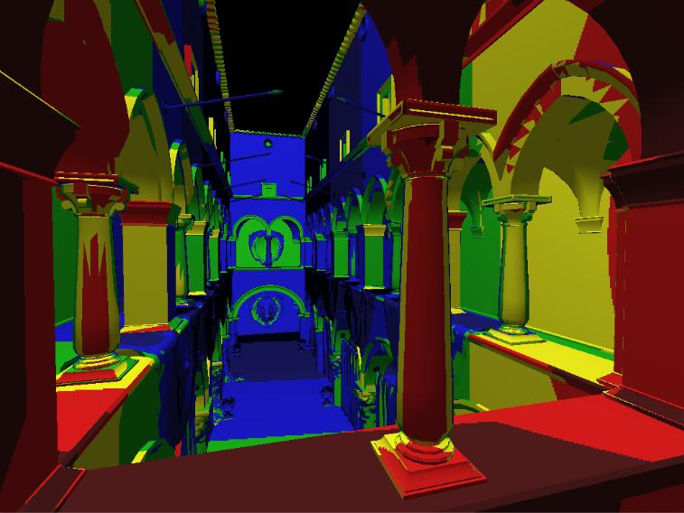
👆 不同颜色代表查询不同的层。
整体上颜色变化反应了需要的纹理大小。但是，存在两层之间的边界，边界处可能存在突变。
💡 提前算好部分范围的值，结果是不同范围的组合。
空间换时间，要想换得好，就要能分解出可以提前计算的部分，且这部分满足：
- 是计算的瓶颈
- 不依赖输入
- 分解与组合方便
改进：三线性插值
原理
这是一种基于mip map的改进，把层数变成一个连续的值，能够解决层数边界上的突变
方法：根据层数再做一次插值，例如需要计算第1.8层的值，就把第1层的插值结果与第2层的插值结果再做一次插值
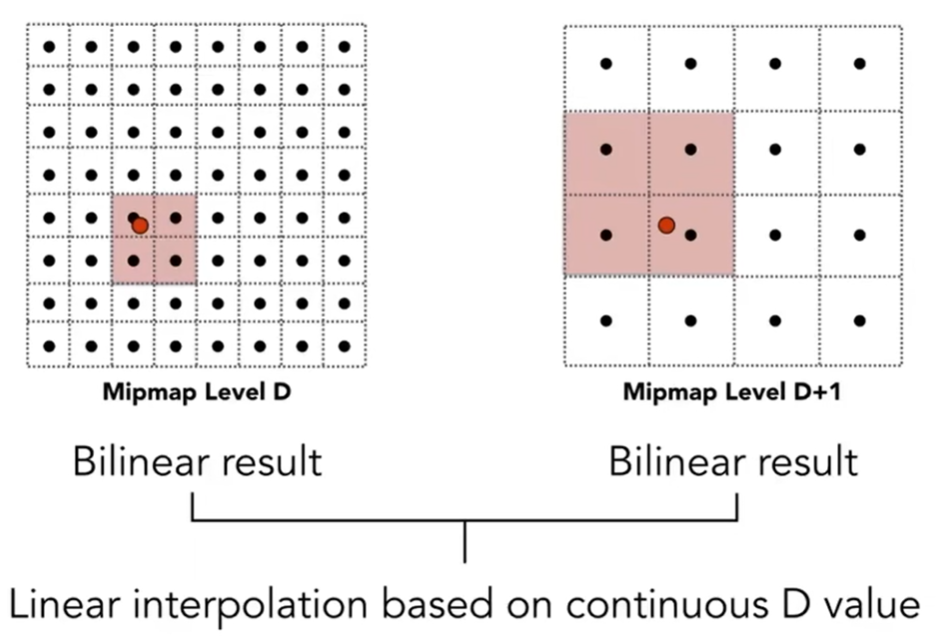
效果
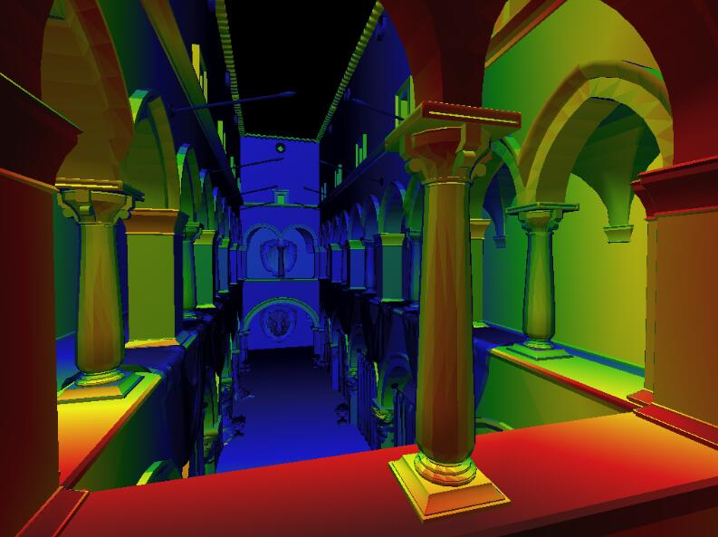
👆 不同颜色代表查询不同的层。层与层之间存在渐变的过渡。
💡 层数很明显是离散信息，连续的层数没有意义，但可以用来插值。总之，万物皆可插。
回到原来那个问题，假设把512超采样的结果看作是这个问题的GT，对比三线性插值后的效果：
| 512超采样 | 三线性插值 |
|---|---|
| 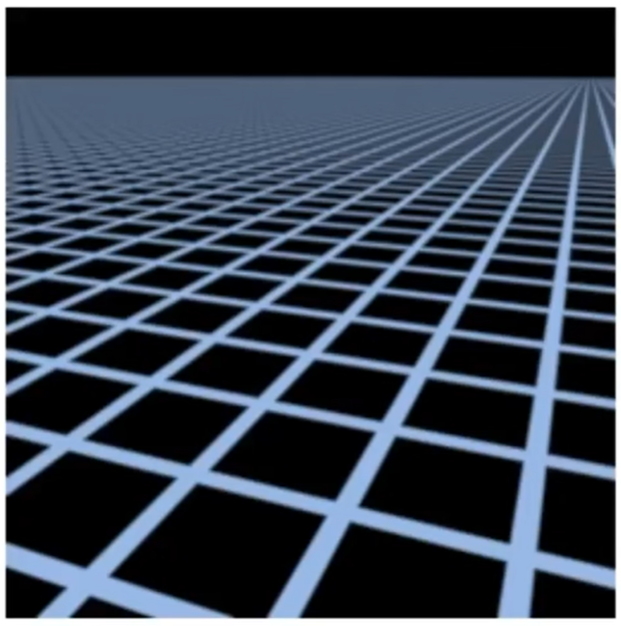 | 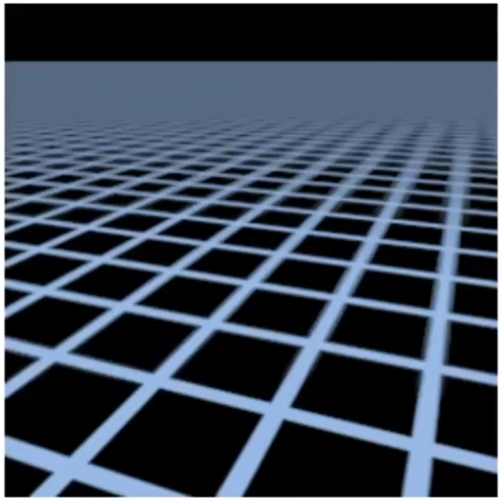 |
远处没有摩尔纹，但是变成了一片灰色，这种情况称为overblur。
这是因为mipmap只能计算方形区域。而根据上图可以看出，屏幕的方形区域不对应纹理图上的方形区域。
改进：Ripmap：各项异性过滤(Anisotropic littering)
原理
MipMap只预计算图中对角线上的图片，它假设纹理是按同比例压缩的。但事实上不是这样。
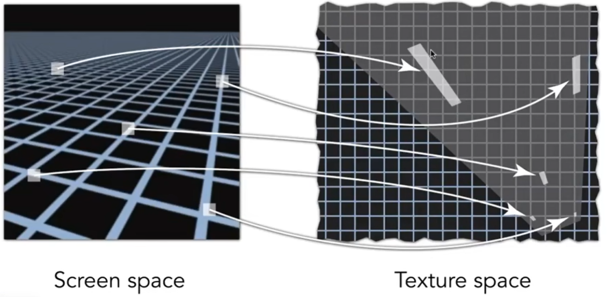
👆 屏幕的方形区域实际上是对应纹理空间的不规律形状，如果用正方形来代表这长条，会发生过渡blur。
💡 如果我来解这个问题，我会把一个倾斜成多个大小不同的正方式。再以正方形的大小为权重对正方形结果求平均。
各项异性过滤对原始纹理做不均匀压缩，这样，就可以查询到在纹理上一块长形区域，或宽形区域的值。
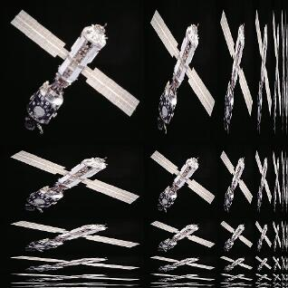
各项异性过滤能解决水平或竖直长方形的问题，不能解决倾斜长方形的问题。
存储开销增加了3倍。
改进：EWA Filtering
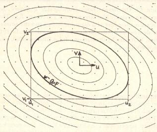
- 把不规则形状拆成很多不同的圆形去覆盖这个不规则形状。
- 每次查询一个圆形区域，进行多次查询。
❓ 为什么是圆形？
特点：质量越好，代价越大
本文出自CaterpillarStudyGroup，转载请注明出处。
https://caterpillarstudygroup.github.io/GAMES101_mdbook/